Biología
Temas
Sistemas biológicos
Un sistema biológico es un conjunto de elementos vivos que están organizados y relacionados entre sí y funcionan como una unidad.

Niveles de organización biológica
De menor a mayor:
- Átomo → unidad básica de la materia.
- Molécula → unión de átomos, como el agua (H₂O).
- Organelo → estructura dentro de una célula, como la mitocondria.
- Célula → unidad básica de los seres vivos.
- Tejido → conjunto de células similares que cumplen una función.
- Órgano → conjunto de tejidos.
- Sistema o aparato → conjunto de órganos que trabajan juntos.
- Organismo → ser vivo individual.
- Población → organismos de la misma especie en un lugar.
- Comunidad → conjunto de poblaciones diferentes.
- Ecosistema → comunidad + factores físicos del ambiente.
- Biosfera → conjunto de todos los ecosistemas de la Tierra.

Características de los seres vivos
- Tienen organización celular.
- Obtienen y utilizan energía.
- Crecen y se desarrollan.
- Se reproducen.
- Responden a estímulos.
- Mantienen condiciones internas relativamente estables (homeostasis).
- Poseen material genético.
- Pueden evolucionar como poblaciones.
Características e interrelaciones de las poblaciones
Una población es un grupo de individuos de la misma especie que vive en un área determinada y puede reproducirse entre sí.
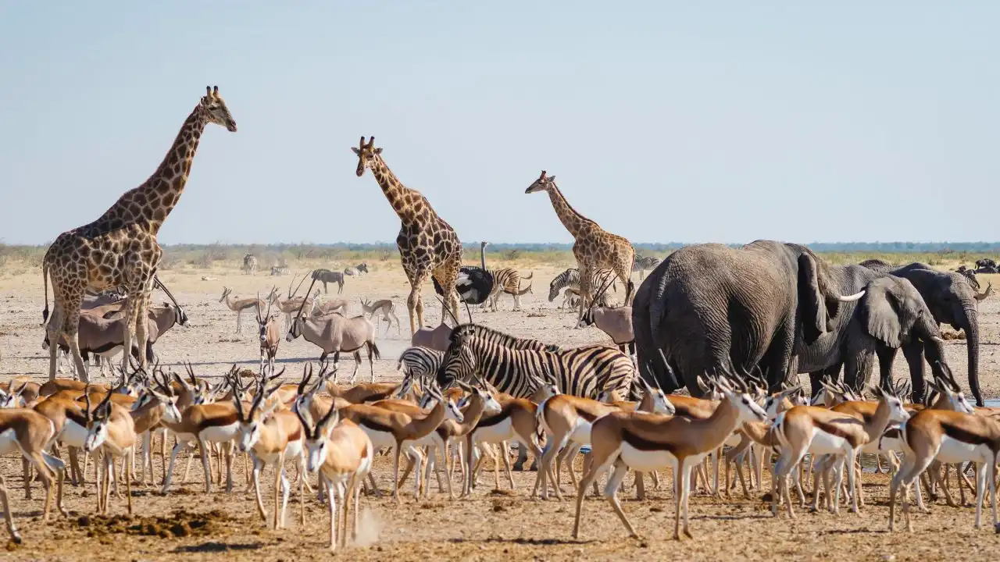
Principales características de una población
Densidad: cantidad de individuos por unidad de área o volumen.
Distribución: forma en que están ubicados los individuos.
Puede ser:
- Agrupada: viven formando grupos.
- Uniforme: están separados a distancias similares.
- Aleatoria: no siguen un patrón definido.
Tamaño poblacional: número total de individuos.
Natalidad: número de nacimientos.
Mortalidad: número de muertes.
Inmigración: individuos que entran a una población.
Emigración: individuos que salen de una población.
Crecimiento poblacional
Una población puede crecer cuando:
nacimientos + inmigración > muertes + emigración
Puede existir:
- Crecimiento exponencial: aumenta rápidamente cuando hay muchos recursos.
- Crecimiento logístico: el crecimiento disminuye al acercarse a la capacidad de carga (K), que es el número máximo de individuos que el ambiente puede mantener de manera relativamente estable.


Interacciones entre organismos
| Interacción | Efecto |
|---|---|
| Competencia | Ambos se perjudican (-/-) |
| Depredación | Uno se beneficia y otro se perjudica (+/-) |
| Parasitismo | El parásito se beneficia y el huésped se perjudica (+/-) |
| Mutualismo | Ambos se benefician (+/+) |
| Comensalismo | Uno se beneficia y el otro prácticamente no se afecta (+/0) |
Ejemplo: las abejas y las flores pueden tener una relación de mutualismo: la abeja obtiene alimento y la planta puede ser polinizada.
Equilibrio ecológico
El equilibrio ecológico es la condición en la que los componentes de un ecosistema mantienen relaciones relativamente estables a lo largo del tiempo.

No significa que nada cambie. Los ecosistemas cambian constantemente, pero pueden mantener cierta estabilidad mediante procesos naturales.
Factores bióticos
Son los componentes vivos:
- Plantas
- Animales
- Hongos
- Bacterias
- Otros organismos
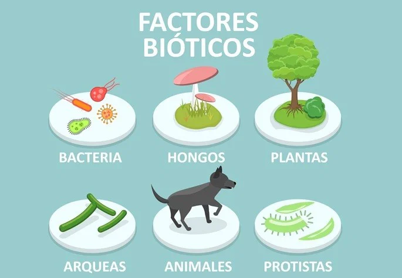
Factores abióticos
Son los componentes no vivos:
- Agua
- Temperatura
- Luz
- Suelo
- Aire
- Humedad
- pH
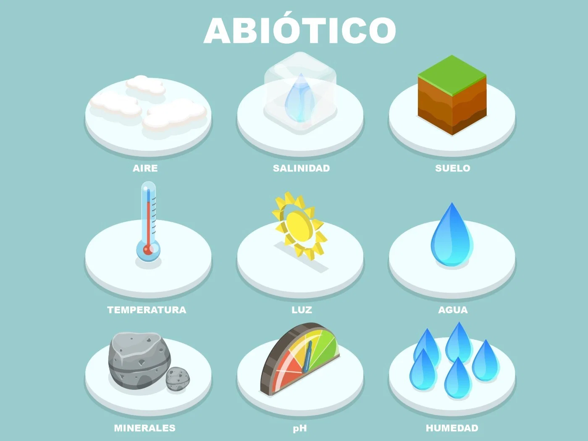
Cadenas alimentarias
Representan cómo se transfiere materia y energía entre organismos.
Productores → consumidores → descomponedores
Ejemplo:
Pasto → saltamontes → rana → serpiente → descomponedores

Relaciones ecológicas
Los organismos dependen unos de otros. Si desaparece una especie, puede afectar a otras especies relacionadas con ella.
Por ejemplo:
menos depredadores → más presas → mayor consumo de vegetación → disminución de plantas
Por eso, alterar una parte de un ecosistema puede producir efectos en cadena.

Restauración ecológica y desarrollo sostenible
Restauración ecológica
Es el proceso de ayudar a recuperar un ecosistema que ha sido degradado, dañado o destruido.

Puede incluir:
- Reforestación con especies nativas.
- Recuperación de ríos y humedales.
- Eliminación de especies invasoras.
- Recuperación de suelos.
- Protección de especies amenazadas.
- Creación de áreas protegidas.
Desarrollo sostenible
Es un modelo de desarrollo que busca satisfacer las necesidades actuales sin comprometer la capacidad de las generaciones futuras para satisfacer sus propias necesidades.
Se suele representar mediante tres dimensiones:
Ambiental + económica + social
Por ejemplo, una actividad agrícola sostenible busca producir alimentos, generar ingresos y reducir el daño ambiental.

Recursos renovables y no renovables
Renovables: pueden regenerarse relativamente rápido si se utilizan adecuadamente.
- Agua
- Bosques
- Energía solar
- Viento

No renovables: existen en cantidades limitadas y se forman durante períodos geológicos muy largos.
- Petróleo
- Carbón
- Gas natural
- Minerales

Problemas ambientales
- Deforestación.
- Contaminación.
- Pérdida de biodiversidad.
- Cambio climático.
- Sobreexplotación de recursos.
- Fragmentación de hábitats.
Genética
La genética es la rama de la Biología que estudia la herencia y la variación de las características de los organismos.
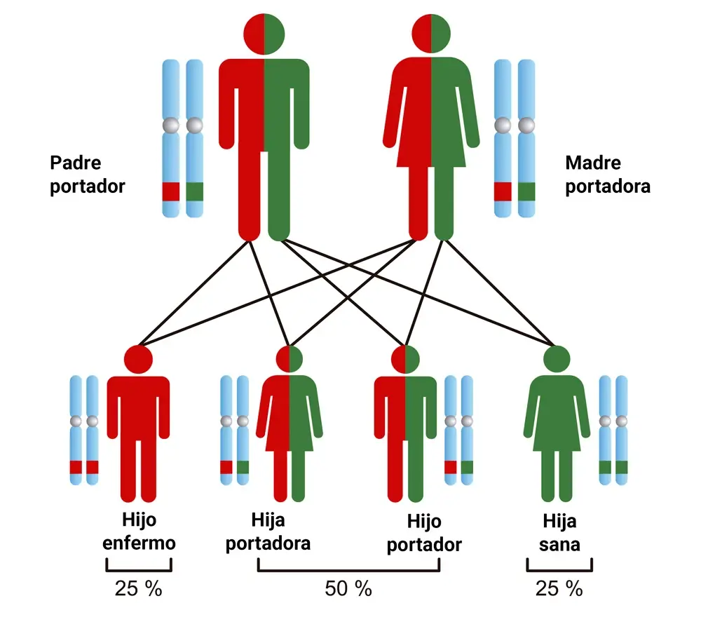
ADN
El ADN (ácido desoxirribonucleico) contiene la información genética.
Está formado por nucleótidos y utiliza cuatro bases:
- A → Adenina
- T → Timina
- C → Citosina
- G → Guanina
Las bases se complementan:
A ↔ T
C ↔ G
Gen
Un gen es una región de ADN que contiene información relacionada con un producto funcional, como un ARN o una proteína.
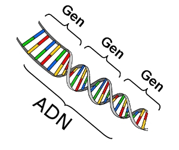
Cromosomas
Son estructuras formadas principalmente por ADN y proteínas que contienen muchos genes.
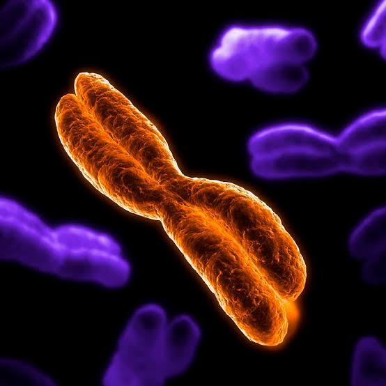
Alelos
Son diferentes versiones de un gen.
Por ejemplo, un gen puede tener diferentes alelos que contribuyen a diferentes variantes de una característica.
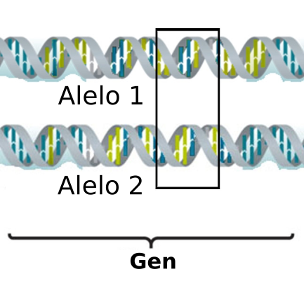
Genotipo y fenotipo
Genotipo: combinación genética de un organismo.
Fenotipo: características observables que resultan de la interacción entre el genotipo y el ambiente.
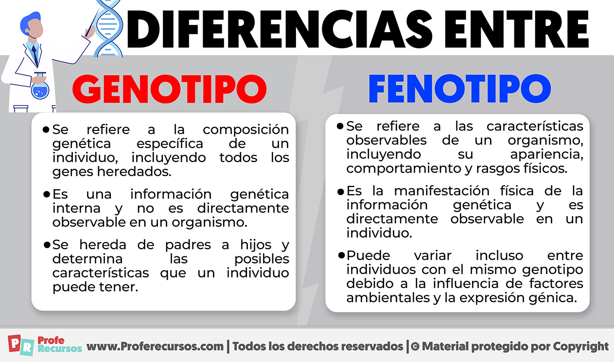
Dominante y recesivo
Un alelo dominante puede expresarse cuando está presente una sola copia.
Un alelo recesivo generalmente necesita estar presente en dos copias para expresarse en un modelo mendeliano simple.
Homocigoto y heterocigoto
Homocigoto: dos alelos iguales.
- AA
- aa
Heterocigoto: dos alelos diferentes.
- Aa
Leyes de Mendel
Gregor Mendel estudió la herencia utilizando plantas de guisantes.
Sus principios incluyen:
- Segregación: los dos alelos de un gen se separan durante la formación de gametos.
- Distribución independiente: en ciertos casos, los alelos de diferentes genes se distribuyen independientemente.
Evolución
La evolución biológica es el cambio en las características heredables de las poblaciones a través de las generaciones.
Una idea importante:
Los individuos no evolucionan durante su vida; las poblaciones evolucionan a través de generaciones.
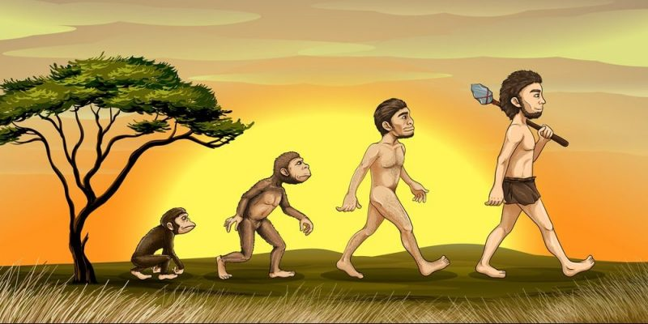
Variabilidad genética
Dentro de una población existen diferencias genéticas entre individuos.
La variabilidad puede originarse por:
- Mutaciones
- Recombinación genética
- Reproducción sexual
Esta variabilidad es importante porque proporciona diferencias sobre las cuales pueden actuar procesos evolutivos.
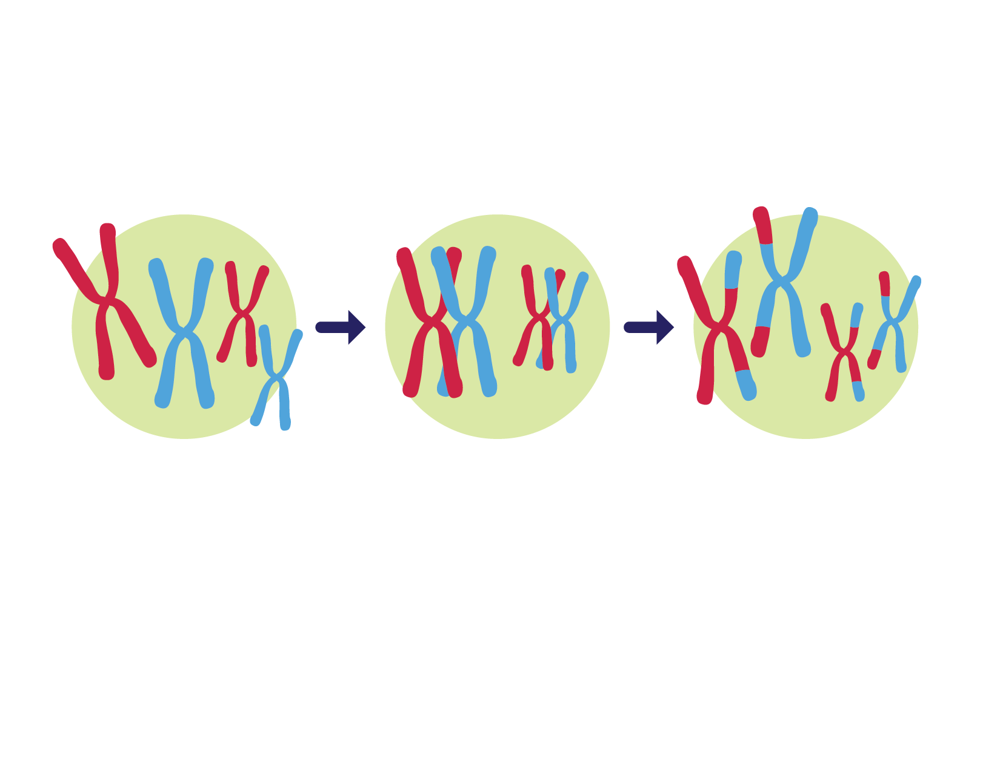
Selección natural
La selección natural ocurre cuando ciertas características heredables permiten que algunos individuos tengan mayor éxito reproductivo en un ambiente determinado.
Por ejemplo:
- Existe variación entre individuos.
- Parte de esa variación es heredable.
- El ambiente favorece determinadas características.
- Los individuos con esas características pueden dejar más descendencia.
- Esas características pueden hacerse más comunes en generaciones posteriores.

Adaptación
Una adaptación es una característica heredable que aumenta la capacidad de un organismo para sobrevivir o reproducirse en un ambiente determinado.
Ejemplo: ciertas características que permiten a un organismo vivir mejor en ambientes muy secos.
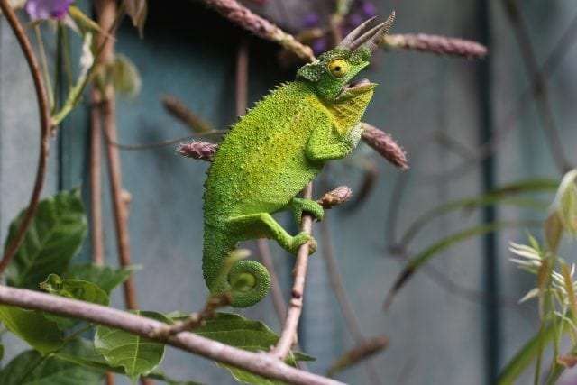
Evidencias de la evolución
Entre las principales evidencias están:
- Fósiles
- Anatomía comparada
- Órganos homólogos
- Embriología comparada
- Biogeografía
- ADN y biología molecular
- Observación de cambios evolutivos en poblaciones
Especiación
La especiación es el proceso mediante el cual surgen nuevas especies.
Puede ocurrir cuando poblaciones de una misma especie quedan aisladas y, con el paso de muchas generaciones, acumulan diferencias genéticas hasta alcanzar aislamiento reproductivo.
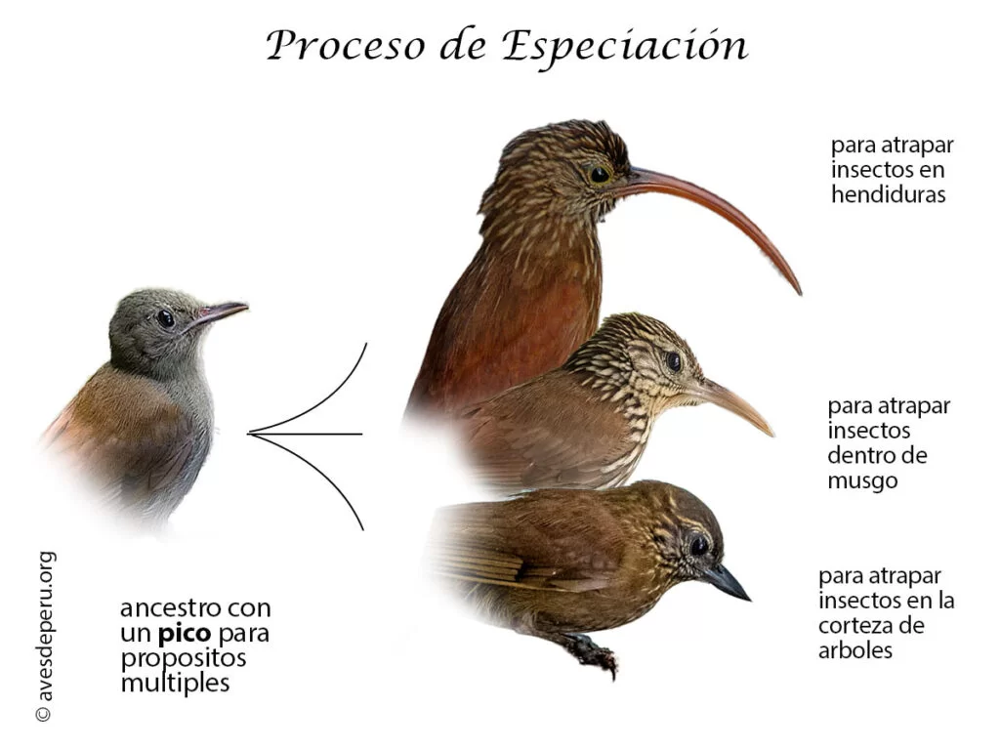